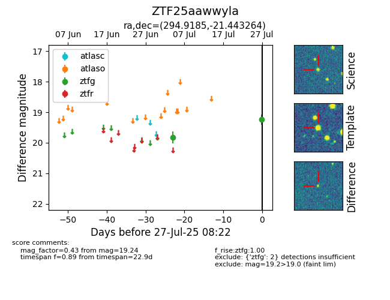

Target ZTF25aawwyla at 2025-07-27 08:22, see:
FINK: fink-portal.org/ZTF25aawwyla
Lasair: lasair-ztf.lsst.ac.uk/objects/ZTF25aawwyla
ALeRCE: alerce.online/object/ZTF25aawwyla
alt names
ZTF25aawwyla (ztf,fink)
coordinates:
equatorial (ra, dec) = (294.9185,-21.44326)
galactic (l, b) = (18.3560,-19.86243)
photometry
last ztfg=19.24
2 ztfg detections
